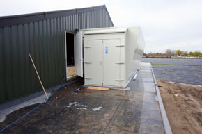
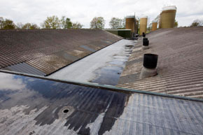
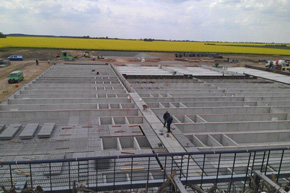

So beschreibt das Regierungsportal eine Aufgabe des Wirtschaftsministeriums. Die Abteilung 2 ist für die Wirtschafts- und Strukturpolitik des Landes zuständig. Dort werden die Fördergrundsätze im Bereich der Industrie entschieden. Für Anlagen, die auf Grund ihrer Beschaffenheit oder ihres Betriebes besonders schädliche Umwelteinwirkungen verursachen können ist die Abteilung 4 zuständig. Genehmigungen für agrarindustrielle Massentierhaltungsanlagen nach dem Bundes-Immissionsschutzgesetz erfolgen in enger Zusammenarbeit mit dieser Abteilung.
[Anhang: <!-- ia0 -->56.jpg<!-- ia0 -->][Anhang: <!-- ia1 -->17.jpg<!-- ia1 -->][Anhang: <!-- ia2 -->3.jpg<!-- ia2 -->]
Der Bau der umstrittenen Ferkelfabrik am Tollensetal ist das Ergebnis einer ministeriellen schwarzroten Kooperation.
Im Koalitionsvertrag von 2006 unter Pkt. 109 wurde die Richtung dazu vorgegeben:
„ Die Koalitionspartner wollen die Veredlungswirtschaft stärken. Aus diesem Grund werden Genehmigungsverfahren im Bereich der Errichtung von Tierhaltungsanlagen gestrafft und durch eine offensivere Öffentlichkeitsarbeit begleitet. Ziel ist es, die Entwicklung der Tierbestände und die Veredlung als Quelle von Wertschöpfung und Arbeitsplätzen voranzutreiben.“
Inzwischen wird leider immer klare, dass die Entwicklung der Tierbestände in der Gemeinde Alt Tellin eher dazu geeignet ist, Arbeitsplätze in anderen, kleineren Tierhaltungsanlagen u. im Tourismus abzubauen u. die Bevölkerungsflucht aus dem ländlichen Raum voranzutreiben. Im aktuellen Koalitionsvertrag ist das benannte gestraffte Genehmigungsverfahren zwar nicht mehr zu finden aber der Zweck dieses Forums ist zweifelsfrei eine offensivere Öffentlichkeitsarbeit für die praktizierte geplante Industriepolitik auf dem Dorfe.


